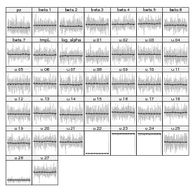

Figure 1: Basic view of owl data (arrival time not shown).
glmmADMB is a package, built on the open source AD Model Builder nonlinear fitting engine, for fitting generalized linear mixed models and extensions.
As of version 0.6.5, the package has been greatly revised to allow a wider range of response and link functions and to allow models with multiple random effects. For now, the resulting package is slower than the old (single-random-effect version), but we hope to increase its speed in the future.
In order to use glmmADMB effectively you should already be reasonably familiar with generalized linear mixed models (GLMMs), which in turn requires familiarity with (i) generalized linear models (e.g. the special cases of logistic, binomial, and Poisson regression) and (ii) ‘modern’ mixed models (those working via maximization of the marginal likelihood rather than by manipulating sums of squares).
In order to fit a model in glmmADMB you need to:
Random effects can be specified either in a separate random argument (as in nlme) or as part of the model formula (as in lme4).
These data, taken from [3] and ultimately from [2], quantify the number of negotiations among owlets (owl chicks) in different nests prior to the arrival of a provisioning parent as a function of food treatment (deprived or satiated), the sex of the parent, and arrival time. The total number of calls from the nest is recorded, along with the total brood size, which is used as an offset to allow the use of a Poisson response.
Since the same nests are measured repeatedly, the nest is used as a random effect. The model can be expressed as a zero-inflated generalized linear mixed model (ZIGLMM).
First we draw some pictures (Figures 1, 2).
Load the glmmADMB package to get access to the Owls data set; load the ggplot2 graphics package.
Various small manipulations of the data set: (1) reorder nests by mean negotiations per chick, for plotting purposes; (2) add log brood size variable (for offset); (3) rename response variable.
Now fit some models:
The basic glmmadmb fit — a zero-inflated Poisson model.
The coefplot2 package knows about glmmadmb fits:

We can also try a standard zero-inflated negative binomial model; the default is the “NB2” parameterization (variance = μ(1 + μ∕k)).
Alternatively, use an “NB1” fit (variance = ϕμ).
Relax the assumption that total number of calls is strictly proportional to brood size (i.e. using log(brood size) as an offset):
Every change we have made so far improves the fit — changing distributions improves it enormously, while changing the role of brood size makes only a modest (-1 AIC unit) difference:
Compare the parameter estimates:

In contrast to zero-inflated models, hurdle models treat zero-count and non-zero outcomes as two completely separate categories, rather than treating the zero-count outcomes as a mixture of structural and sampling zeros.
As of version 0.6.7.1, glmmADMB includes truncated Poisson and negative binomial familes and hence can fit hurdle models. The two parts of the model have to be fitted separately, however. First we fit a truncated distribution to the non-zero outcomes:
Then we fit a model to the binary part of the data (zero vs. non-zero). In this case, I started by fitting a simple (intercept-only) model with intercept-level random effects only. This comes a bit closer to matching the previous (zero-inflation) models, which treated zero-inflation as a single constant level across the entire data set (in fact, leaving out the random effects and just using glmmADMB(nz~1,data=Owls,family="binomial"), or glm(nz~1,data=Owls,family="binomial"), would be an even closer match). I then fitted a more complex binary model — this is all a matter of judgment about how complex a model it’s worth trying to fit to a given data set — but it does look as though the zero-inflation varies with arrival time and satiation.
AD Model Builder has the capability to run a post hoc Markov chain to assess variability — that is, it uses the MLE as a starting point and the estimated sampling distribution (variance-covariance matrix) of the parameters as a candidate distribution, and “jumps around” the parameter space in a consistent way (Metropolis-Hastings?) to generate a series of samples from a posterior distribution of the parameter distribution (assuming flat priors: please see the ADMB documentation, or [1], for more details).
This is very convenient, but tends to be a bit slow. In the example below, I ran a chain of 50,000 MCMC iterations — on examination, the default chain of 1000 iterations was much too short — which took about 1.92 hours on a modern (2011) laptop.
Convert the MCMC chain to an mcmc object which the coda package can handle:
Look at the trace plots.

The Geweke diagnostic gives Z scores for each variable for a comparison between (by default) the first 10% and last 50% of the chain
The most frequently used diagnostic, Gelman-Rubin (gelman.diag), requires multiple chains. The full set of diagnostic functions available in coda is:
effectiveSize gives the effective length of the chain for each variable, i.e. the number of samples corrected for autocorrelation:
HPDinterval gives the highest posterior density (credible interval):
You might prefer inferences based on the quantiles instead:
You can also look at density plots or pairwise scatterplots (“splom” in lattice and scapeMCMC, for Scatterplot matrices), although these are not particularly useful for this large a set of parameters:
The MCMC output in glmmADMB is currently in a very raw form — in particular, the internal names and variants of the parameters are used:
If you need to use the MCMC output and can’t figure out how, please contact the maintainers and encourage them to work on them some more (!)
The standard set of accessors is available:
Missing: specifying starting values; MCMC; general troubleshooting (extra arguments, running outside R)
[1] Benjamin M. Bolker. Ecological Models and Data in R. Princeton University Press, Princeton, NJ, 2008.
[2] A. Roulin and L. Bersier. Nestling barn owls beg more intensely in the presence of their mother than in the presence of their father. Animal Behaviour, 74:1099–1106, 2007.
[3] Alain F. Zuur, Elena N. Ieno, Neil J. Walker, Anatoly A. Saveliev, and Graham M. Smith. Mixed Effects Models and Extensions in Ecology with R. Springer, 1 edition, March 2009.